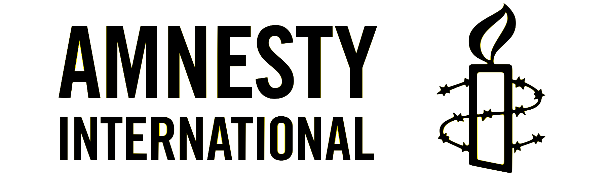

Student | Hacker
In love with Barcelona
Deutsch Lerner
GreenCustomers is a Barcelona-based StartUp which aims to raise awareness to hotel's managers about the environmental and economical impact of its customers.
HACK UPC
HackUPC is a hackathon held by Hackers@UPC, a student association from Polytechnical University of Catalonia (UPC) in Barcelona. Being part of it as a hacker and a volunteer opened me a whole new world of experiences, oportunities and knowledge.

Monthly donor of Amnesty International. I want to contribute to win the fight for democracy and human rights. So no-one has to be opressed or silenced.